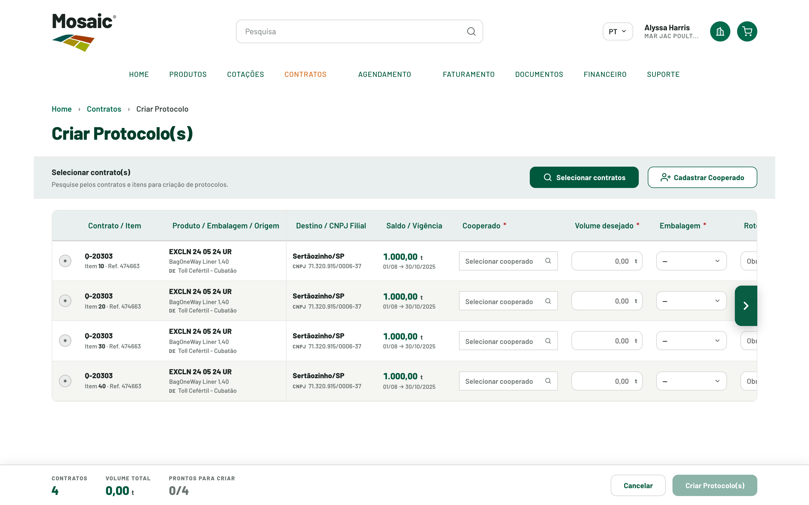
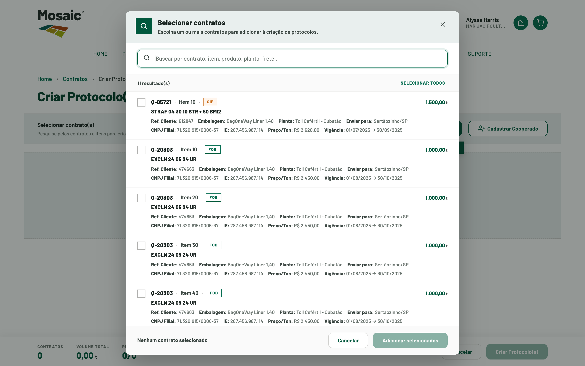

Criar Protocolo
Criar um protocolo a partir de um contrato/cotação e seus itens.

2 3 4 5 6
Cenário atual
Como acontece hoje — esforço, pessoas e sistemas.
Fluxo atual
- Acessar a área correspondente
- Localizar a filial
- Selecionar a filial
- Localizar o contrato
- Abrir o contrato
- Adicionar o contrato ao carrinho
- Abrir o carrinho
- Prosseguir para a solicitação
- Selecionar o item
- Informar a quantidade
- Informar a data prevista
- Selecionar/alterar embalagem
- Informar preço
- Informar nota fiscal
- Preencher campos obrigatórios
- Adicionar instruções
- Avançar para o resumo
- Revisar os dados
- Confirmar a solicitação
- Concluir a criação
Esforço & contexto
Pessoas
Sistemas
Repetição
Uma execução por filial/contrato — ex.: cliente com ~89 filiais repete a jornada 89 vezes.
Principais problemas
- Busca manual de filial e de contrato
- Uso de carrinho em jornada operacional
- Alto número de etapas e preenchimento repetitivo
- Informações dispersas / dependência de outros sistemas
- Criação individual (um protocolo por vez)
- Pouca escalabilidade para clientes de alto volume
Nova experiência
Como fica no Mosaic Direct 2.0.
Jornada estruturada: seleção de contratos, tabela de itens contida com colunas congeladas e cabeçalho fixo, cadastro de cooperado sem sair da tela, busca com autocomplete e status por linha (incompleto → em progresso → completo).
O que muda em relação ao fluxo atual
- Elimina a busca manual de filial
- Elimina a busca manual de contrato
- Elimina a etapa de carrinho
- Itens adicionais reaproveitam a mesma jornada, sem repetir a busca
Estimativa de esforço — atual × novo
Base: reunião de 07/07/2026 com Gustavo. Contamos as interações necessárias (sem hover nem scroll) e estimamos o tempo com as informações já em mãos — ~10s por interação, com buscas e carrinho pesando mais.
Jornada atual
Como chegamos a 3–4 min
- Localizar + selecionar filial — ~30s
- Localizar + abrir contrato + carrinho — ~45s
- Preencher o item (qtd, data, embalagem, preço, NF, campos, instruções) — ~90s
- Revisar + confirmar — ~30s
≈ 195s ≈ 3–4 min · só um protocolo por execução.
Jornada redesenhada
O que reduz o tempo
- Elimina a busca de filial (−~30s)
- Elimina busca de contrato + carrinho (−~45s)
- Autocomplete e dados pré-carregados no preenchimento
Efeito de escala
Um cliente com ~89 filiais repete o fluxo ~89 vezes: ~89 × 3,5 min ≈ 5,2 horas apenas criando protocolos. A jornada em lote reduz drasticamente essa repetição.
* estimativa por proporção de etapas — a validar em teste de usabilidade.
Benefícios
Para o cliente
- Menos repetição e menos etapas
- Referências sempre visíveis no scroll
- Sabe o que ainda falta preencher
Para a Mosaic
- Dados mais estruturados na entrada
- Menor exposição a erro de preenchimento
- Base para operações de maior volume
Dados & pendências
Dados relacionados Confirmado
- 4.865 protocolos
- 2.328 contratos/cotações
- média de 2,09 protocolos por contrato/cotação
- concentração relevante em clientes de alto volume
Pendências A validar
- Cliques finais e tempo do novo fluxo — a validar em teste de usabilidade
- Limites de operação em lote (múltiplos contratos/protocolos)